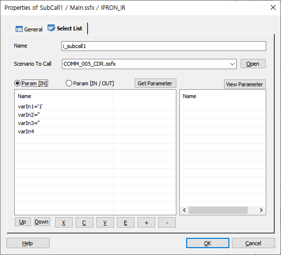

지정된 시나리오 파일을 호출 합니다. 이동 후 Return Item에 의해서 현재 위치로 복귀가 이루어 집니다.
ICON

PROPERTIES
 Select List
Select List

Name : SubCall 의 이름을 지정 합니다.(호출 결과를 받을 변수명에 접근 할 때 사용)
Scenario To Call : 호출될 시나리오 파일명을 지정 합니다.(SSFX 만 가능합니다)
Open Button : 지정된 시나리오 파일을 오픈 합니다.
Get Scenario Parameter Button : 호출될 시나리오의 Start Item에 설정된 매개 변수 리스트를 가져와서 Param [ IN ] 과 Param [ IN / OUT ] 에 설정 합니다.
Param [IN] : 호출될 시나리오 Start Item의 iparam 매개 변수 리스트에 넘겨줄 매개 변수 리스트 입니다.
Param [IN/OUT] : 호출될 시나리오 Start Item의 ioparam 매개 변수 리스트에 넘겨줄 매개 변수 리스트 입니다.
- 배열은 파라미터로 넘길수 없고, 구조체는 가능합니다.
- 배열을 포함한 구조체는 파라미터로 넘길수 있습니다.
View Scenario Parameter Button : 설정된 시나리오의 Start Item에 설정된 매개 변수 리스트를 가져와서 Param [ IN ] 과 Param [ IN / OUT ]의 Start_Values 리스트에 표시한다.
RESULT
· 아이템 속성 변수.(@name 은 Name 항목에서 지정 )
@name.ret_value : 호출된 시나리오에서 리턴(Return Item)하는 값이 저장 됩니다
RELATED